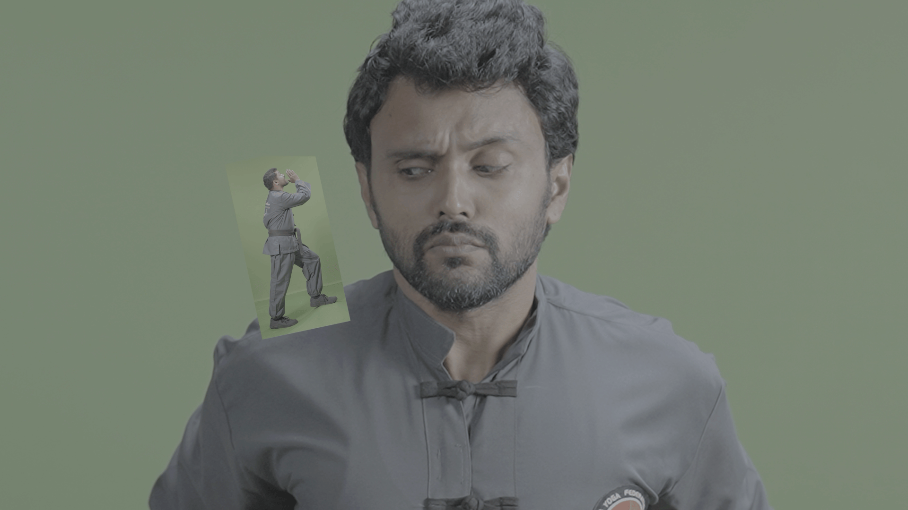

AD for Entri Elevate - BAFC COURSE
A cinematic motion-led ad piece combining visual effects, edit rhythm, and polished production craft for entri Elevate.
Breakdown




Overview
For this project, I worked as the on-set VFX coordinator and led the entire post-production pipeline, from visual effects and motion design to editing and final delivery. The goal was to create a premium, minimal advertisement for Entri Elevate’s BAFC Course that felt visually engaging while maintaining a clean and modern aesthetic.
Bringing the concept to life required close collaboration between production and post-production, ensuring every shot was planned with the final visual effects in mind. It was a fun and rewarding project that allowed me to combine storytelling, technical execution, and creative problem-solving into a polished final piece.